Dragon’s Dogma 2
Coast cartographer
A tall angular face, pale swept hair and worn field clothes. Compare the nose and brow in profile. The small scar and leather detail depend strongly on the surface artwork.

Inspect the head

Can one editor make a convincing human face, a four-armed merchant and a clothed character with a distinct silhouette? These six original models come from the workshop. The linked community creations supply each design target.
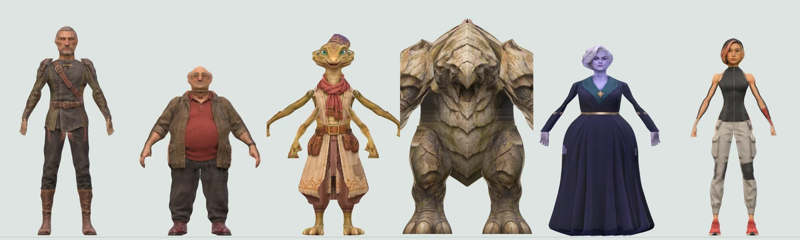
Dragon’s Dogma 2
A tall angular face, pale swept hair and worn field clothes. Compare the nose and brow in profile. The small scar and leather detail depend strongly on the surface artwork.
Dragon’s Dogma 2
A short broad adult with a projecting belly, full cheeks and glasses. Compare the two human profiles at one scale. The soft chin is visible in clay, while the fine frames rely on paint.
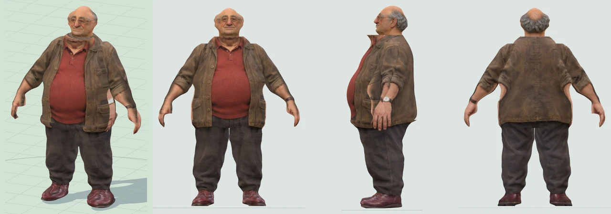

Spore
Four independent arms with separate hands, a long muzzle and a travelling coat. Maxis singled out the extra hands. Count all four in three-quarter view, then orbit to see where the lower pair meet the trunk.

Spore
Maxis called attention to the repeated tooth-like armor. The porter carries fifteen individually selectable dorsal plates. Compare the rear outline in clay with the shoulder and forearm from the side.

The Sims 4
A mature adult with lilac skin, swept hair and a long formal gown. The skirt has real pleats and its own rig. Base layer reveals the legs and body inside it. The shoulder silhouette still looks narrower than the brief.

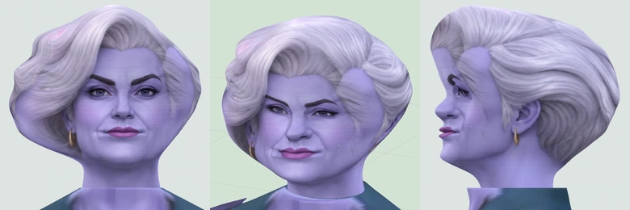
The Sims 4
A lean runner in a dark close-cut top, pale trousers and red shoes. Compare the short bob and leg profile against the cartographer at equal height. A near-touching hand and trouser edge exposed a defect in automatic biped fitting.


Each attempt began with the same ellipsoid and the same request for a peaceful marsh companion that could carry samples. Draws 1 and 2 reused the same direction code. Draws 3 to 6 sampled fresh directions. Every returned model was kept.
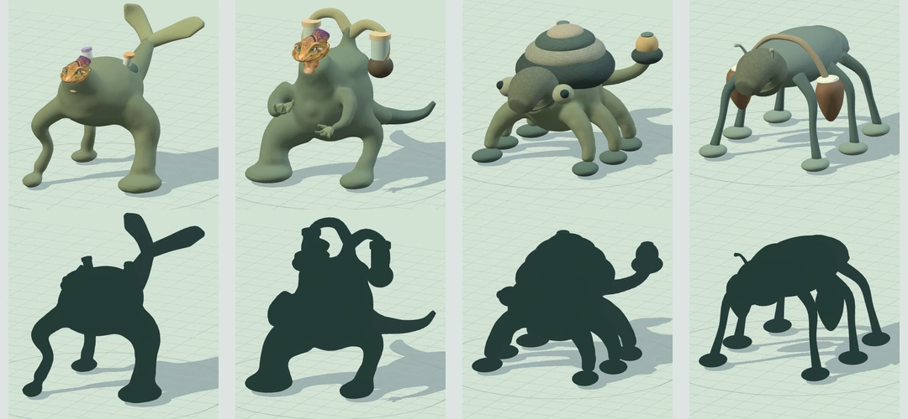
The two repeated directions produced 20- and 24-part animals with different leg plans. One new direction yielded a stack of shells on six paddles, another a horizontal body carrying underslung panniers. The editor measured heights of 1.45, 1.69, 1.34 and 1.20 metres. Requests 4 and 6 reached the four-minute deadline without a model.
At the same rendered height, the two repeated-direction silhouettes differed by 0.483 on a 0–1 scale of one minus mask intersection over union. Pairs with different directions ranged from 0.436 to 0.709. These four results show that the agent can vary a shared brief. A larger paired sample is needed to estimate how much extra variety the cue draw contributes. Primitive feet and repeated jar shapes remain visible.
In an earlier six-request pilot, four proposals failed with an undefined-field error, one had invalid geometry, and one timed out. The editor now supplies identity transforms for new regions and gives the agent a correction attempt. It also accepts artist-written choice groups, each with its own pin, for explicit control over what gets sampled.
On a separate retry of the two timed-out directions, both requests returned editable models, with 21 and 28 regions in 37 and 377 seconds. The retries used a seven-minute limit and medium reasoning effort. Read both retry outcomes.
All six outcomes, wording, seeds, region IDs and distances · Editable models 1, 2, 3 and 5.
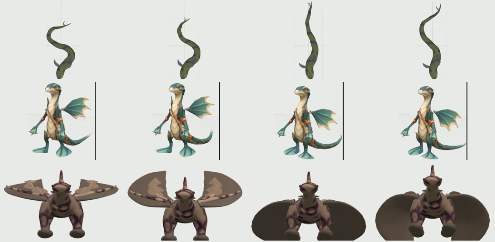
The artist asked a new humanoid starter to become a limbless salt-marsh eel. In 80 seconds the geometry agent made an eleven-point trunk, two fins, a wedge head, eyes and asymmetrical crests. The player measured 0.59 m of peak vertex travel in Slither. The lowest sampled vertex stayed 7 mm above its floor. The same articulated body can swim and coil.
The reef cartographer and the plated glider exercise a different rig. A wing made of spars and plates moves at its shared root. The flight fitter measures the lowest wingtip and lifts the loop where needed. An early glider export dipped 6 cm below the ground. The repeat measurements are in the playback report.
Editable eel · Rigged game model · Open in the workshop · Play in Three.js
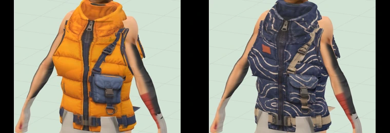
The image tool repainted the accepted four-view garment. Twelve garment regions acquired a new color source and all 26 original parts kept their geometry, material settings and attachment transforms. The silhouette masks were identical. This test covers one fitted garment. Other prints may drift across seams. Editable printed vest · Open in the workshop

The haircut and its seed travel with the editable head. Hair length, sweep, volume and color can be edited. The braids are actual geometry in the exported game model. Fine strands and the smooth base cap remain visible at portrait distance. Editable braided portrait
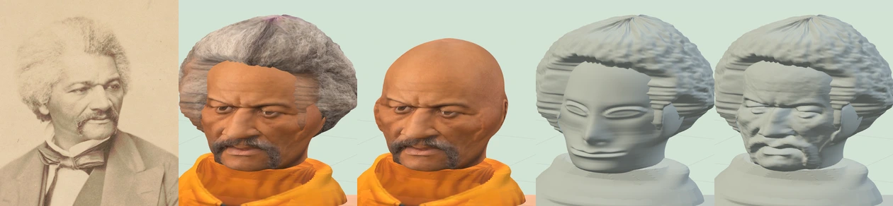
The first request supplied the photograph with a neutral filename and asked for a 3D likeness. The accepted head preserved the other 25 regions of the rescue-vest character. A second image pass inferred the hidden scalp. The editor aligned it using pupil spacing and eye-to-chin height and kept the original hairstyle as a removable mesh. The earliest scalp fit lost its landmarks when the traced head stopped above the neck. Reusing the generated pictures with a full-portrait fit recovered the model.
A third image pass took 43 seconds and supplied frontal depth. Fitting the brightness separately on every row produced sharp ridges at the eyes and nose. One depth calibration across the face produced the result at right. The new brow, cheeks and moustache remain visible in clay. The source has a softer expression, and the ears and hairline still need work. Likeness to this specific sitter has not been independently scored.
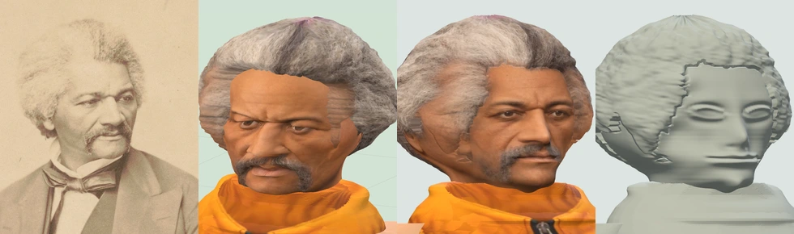
Source photograph by George Francis Schreiber, Philadelphia, 26 April 1870. Library of Congress, Prints and Photographs Division, digital ID ppmsca.69249. Catalog and rights record · Editable portrait · Open in the workshop

The editor changed all 13 direct attachment positions on this glider. Each change stores ordinary part transforms in the editable form. A whole-spine nudge can adjust bow, side bend, length and tip girth. Individual points can also be dragged in the viewport. Editable glider · Open in the workshop

The original 26 regions survived exactly. Two fitted layers bring the total to 28. Saved outfits record visibility, dye, order and base clothing. Wearing an earlier set restores the clothing shown when it was saved. The exported wet-weather set played all four animations with its lowest vertex 4 mm above the floor at eight samples per clip. Cloth uses fitted geometry and skeletal animation. Wide arm movements can still pass through a hanging panel.
Editable outfit collection · Download the rigged GLB · Open in the workshop · Play the GLB.

The ringed animal fell from 70,086 triangles and 21 materials to 23,997 triangles and one material. At a fixed camera, full and game exports shared more than 99% of the silhouette at rest and during Walk. Mean absolute color difference within the shared mask was under 3 out of 255 per channel. Read the measurements · Open the marked form.
One artist-written choice group specified
Walking legs = 3 | 5 | 7 | 8. Two prespecified draws used
the same locked ellipsoid, brief, built-in cues and magnitude. The
first requested three legs and the second eight. Both proposals were
kept as alternatives to the same starting form.
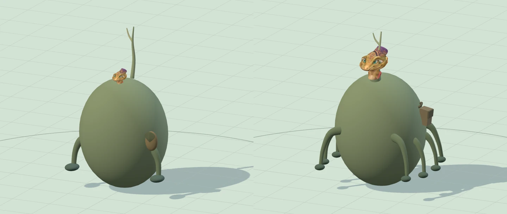
The first proposal took 36 seconds and the second 95 seconds. This tests compliance with two explicit draws. It does not estimate the frequency of each result over repeated requests. Open the tripod and eight-legged form to inspect each attachment. The trial record contains the wording, codes and part IDs.
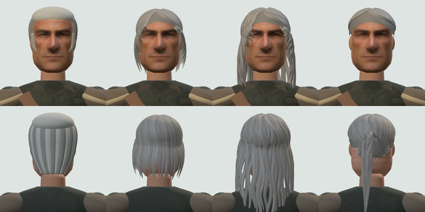

The GLB keeps the facial poses as named morph targets. The standalone player can apply them by name. Two heads were exported at full detail, game detail and as static game meshes. All six files passed the Khronos glTF validator with zero errors and warnings.

Joining organic regions removes interior surfaces at their seams. Each region keeps its editable part and rig attachment. Shared vertices follow neighbouring joints during motion. Three additional characters passed GLB validation at both detail settings.
The painted trials started in the editor with an existing model, a random design direction and written instructions. The local Codex CLI generated fresh artwork and supplied matching front and profile outlines. These files reopen with their source art and editable regions.
Maxis selected Himmelslaub’s Lok-nau-tan for its graceful aquatic build. We used that quality as a held-out target for an original reef cartographer. A single ellipsoid, written instructions and a direction draw produced the first painted model in 219 seconds. Maxis Captain Postcard Challenge winners
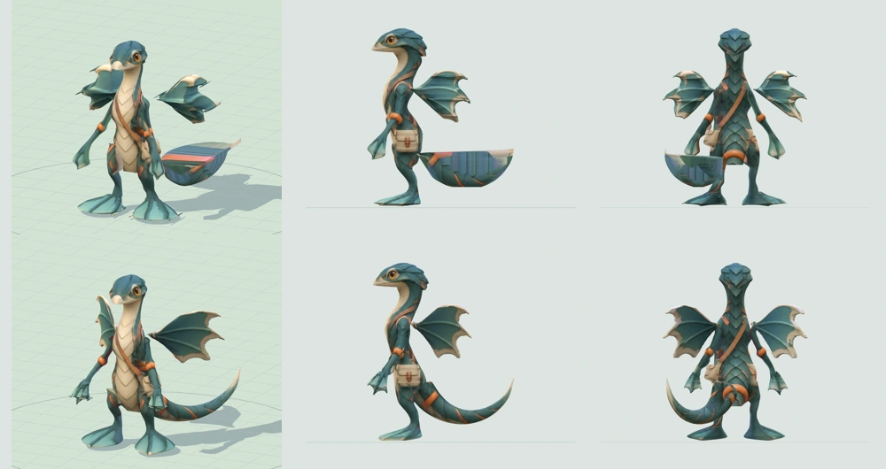
The initial horizontal cross sections turned a hooked tail into a bowl. Fitting a curved centreline through corresponding front and profile landmarks restored the hook. Thin membranes now join the shoulders. The first AI refit request timed out. The next returned twelve editable regions, including two wing membranes and an eight-landmark tail. Its game-detail GLB passed Khronos validation. The webbed hands remain coarse.
Open the editable reef cartographer · Download the game GLB · Open in the workshop · Play the GLB
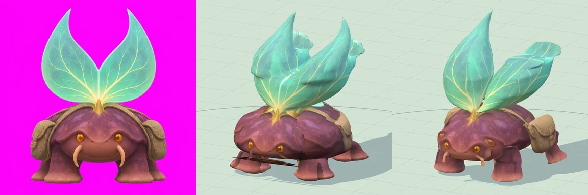
A request for a four-legged grazer with a forked lantern and saddlebags took 187 seconds to reach its first proposal. A failed part map reduced that result to one volume. Refitting the same image recovered 15 regions including separate legs, lantern leaves and bags. Profile paint leaves an extra eye-like marking on the right cheek. Slender tips still need sculpting. Open the grazer recipe in the workshop.

The six Beastren shared by Exciting-Ebb-4205 suggested a species change. We selected the human foreman’s head and asked for an elderly snow leopard. In 99 seconds the editor returned eight editable regions, including a muzzle, jaw, ear pair and cheek ruffs. The other 13 original regions, wardrobe and appearance settings matched the starting recipe. Community target · Open the worker recipe in the workshop.
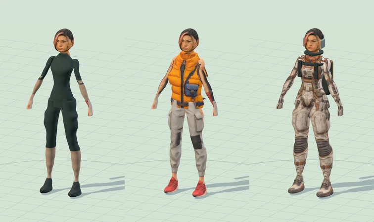
With the runner’s torso protected, a live painted edit generated a sleeveless rescue vest in 134 seconds. Fitting by its lowest panel alone stretched the collar over the wearer’s face. Using the whole garment’s dimensions, a backing for closed garments and a clearance check at each body cross section corrected the fit. The vest is attached only to work clothes. The underlying body and the other wardrobe choices remain editable. Open the rescue vest recipe in the workshop.
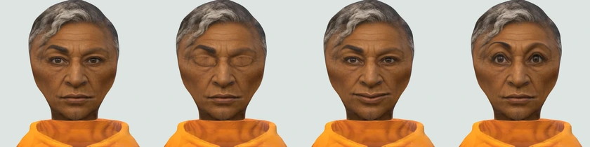
A head-only request changed one of the rescue-vest wearer's 26 regions. All 25 other region records stayed identical. The first multi-piece fit left a gap at the neck. Reusing the same generated artwork and trace map to fit one continuous scalp, jaw and neck closed the gap. Open the editable coastal biologist to orbit the result.

The biologist with both hands fitted was 1.764 m tall in the independent player at both export settings. Game export reduced 389,658 triangles and 26 materials to 24,004 triangles and one material. The two fixed camera angles gave 99.2–99.5% silhouette overlap at rest and during Reach. All 27 finger joints remained in the exported animation. This compares outlines at the test resolution. Pupil detail and small seams require separate close-up inspection.
We started all six faces from the same head, hairstyle and paint. Relative nudges changed jaw width, nose projection, eyes, mouth and chin. A blinded Fable 5.2 High reviewer matched all six clay three-quarter views in a pressure suit to their front and side references in work clothes. Reported confidence ranged from 0.60 to 0.75. Across this single one-to-one trial, nose projection, mouth width and jaw taper carried most of the distinction.
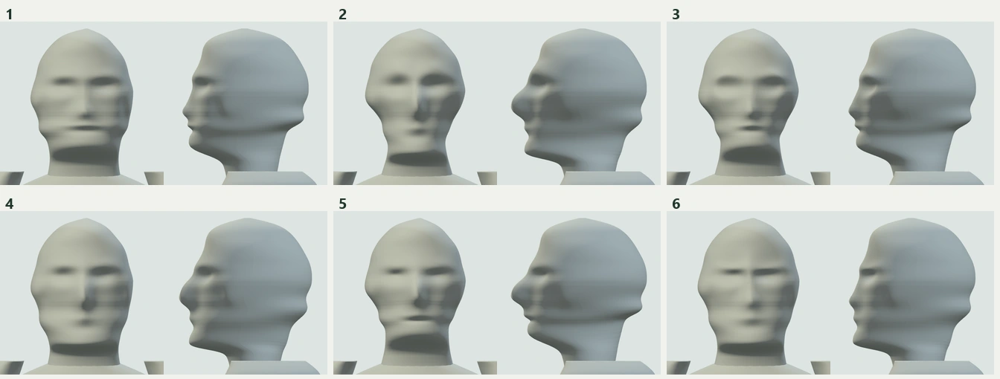

A–6, B–2, C–1, D–4, E–3, F–5.
The reviewer also identified horizontal ridges across cheeks and indistinct eyelids. A subsequent mesh revision smooths profile depth away from the midline and models eyelids, nostril rims and lip edges. The recognition score above applies to the original trial. Inspect the revised clay heads.
| Experiment | Observation |
|---|---|
| Recognize form without paint | A blinded Fable 5.2 High review correctly matched six shuffled clay studies to six descriptions in a single forced-choice trial. The cartographer and scout earned medium confidence. The observer relied on clothing and hair for those two. Four arms and a flared gown were much easier to recognize. This trial measures broad character types. Facial likeness needs close distractors and human raters. |
| Reach a new structure | Two accepted live Codex proposals produced a six-legged beetle and a low four-legged estuary glider. The glider’s crest became visible after fixing how children attach to small primitives. In a separate trial starting with the foreman, one accepted response grafted a painted clawed arm and three shell plates while preserving the protected face. Its oversized arm obscured part of the silhouette. |
| Take the result into a game | Fourteen exported GLBs passed the Khronos validator with zero errors and warnings and loaded in a separate Three.js player. Each contains an articulated skin and four clips. Eight poses per clip were inspected using the skinned vertices. This exposed up to 20 cm of floor penetration in long skirts. After adding hem joints and correcting the root from sampled sole heights, all fourteen stayed within 2 cm of the floor in this test. |
| Preserve openings and reduce game meshes |
At revision d6d89ef, a front ray passed through the
Tidebell shell opening and struck the rim in both exports. Game
detail reduced this model from 147,296 triangles and six
materials to 23,998 triangles and one material, from 25.7 MB to
2.8 MB. Across five separate paired exports, three-quarter
rest-pose silhouette overlap was 99.6–99.9%. Both detail levels
passed the Khronos validator.
Comparison measurements.
|
| Check variety at equal height | Foreground masks are bottom-aligned and rescaled to 192 pixels tall. For each pair the score is one minus intersection over union. Identical contours give zero. Compare front and side separately. Front and rear orthographic silhouettes are almost identical under reflection for these mostly symmetric bodies. Measured pairwise scores. |
Start with a fresh form. Protect the face, pull one shoulder outward and ask for an asymmetrical bulky suit. Check side and rear views, then play Walk and Crouch. Compare the same character in base layer and work clothes. A recognizable result from a different camera and outfit is a tougher test than selecting an authored study.
The game comparisons cover the selected features. The current measurements leave open likeness under close facial distractors, automatic fitting of arbitrary garments, and locomotion on uneven terrain. The 2D consistency experiment remains in the research plan.